Cuộc đua trên sa mạc
Cấp độ 2
Trò chơi dành cho 2 người chơi này là cuộc đua giữa một chú vẹt và một cô sư tử trên sa mạc. Mỗi người chơi phải ấn một phím nhanh nhất có thể để di chuyển con thú của họ, con thú đầu tiên chạm tới cạnh của màn hình sẽ chiến thắng.
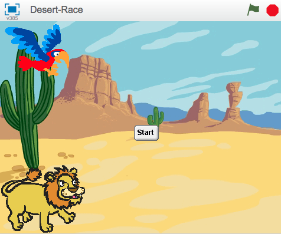
scratch2
Shrink để nó có kích thước tương tự cô nàng sư tử.Chúng ta cần làm cho hoạt họa di chuyển khi bạn ấn phím.
move (4) steps khi bạn ấn phím ‘L’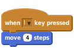
move (4) steps khi bạn ấn phím ‘A’ .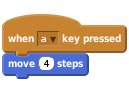
Click vào lá cờ màu xanh lá
Liệu cô nàng sư tử và chú vẹt của bạn có di chuyển trên màn hình khi bạn ấn phím ‘A’ và ‘L’?
Chúng ta cần có một cách để bắt đầu cuộc đua và biết được người chiến thắng.
Đầu tiên chúng ta tạo một nút khởi động.
hide khi nó được click. Thêm một dòng lệnh khác như dưới đây: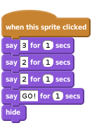
Click vào lá cờ màu xanh lá.
Khi bạn nhấn nút khởi động, nó có đếm ngược để bắt đầu cuộc đua trước khi biến mất không?
Chúng ta cần để cho các tay đua di chuyển sau khi cuộc đua bắt đầu và biết rằng khi nào cuộc đua kết thúc. Bởi vậy, chúng ta cần một biến để lưu giữ thông tin đó.
racing. Bỏ chọn ô cạnh đó để nó không thể hiển thị trên sân khấu.when flag clicked trước đó để được như sau: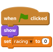
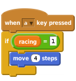
Click vào lá cờ màu xanh lá.
Cô sư tử và chú vẹt chỉ di chuyển sau khi dừng đém ngược phải không?
Chúng ta cần biết người dành chiến thắng trong cuộc đua và đặt lại nó khi kết thúc để có thể đua một lần nữa.
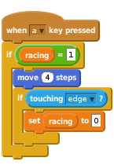
Giờ đây chúng ta cần chú vẹt cho ta biết nếu nó chiến thắng cuộc đua. Ghi lại một âm thanh mới cho hình họa chú vẹt, nó sẽ được phát khi chú vẹt chiến thắng. Click sounds và sau đó ghi lại âm thanh của chú vẹt chiến thắng trong cuộc đua!
Thêm khối lệnh âm thanh play mà bạn ghi lại được và sau đó để cho chú vẹt nói rằng nó đã chiến thắng:
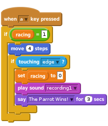
Click vào lá cờ màu xanh lá.
Bạn có thể nhấn nút bắt đầu và tiếp tục cuộc đua bằng cách ấn phím ‘A’ và ‘L’ không?
Liệu hình họa có phát ra âm thanh chiến thắng khi nó hoàn thành cuộc đua?
Sau khi cuộc đua kết thúc, chúng ta cần cho những hình họa biết chúng ta đã chiến thắng và đặt lại trò chơi để có thể chơi một lần nữa.
Chúng ta cần hình họa chiến thắng truyền tin rằng nó đã giành phần thắng.
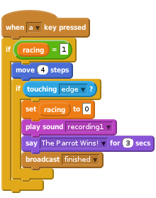
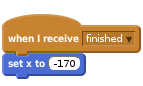
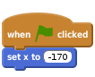
Click vào lá cờ màu xanh lá.
Bạn có thể đua với một người bạn, một trong hai bạn di chuyển con vẹt bằng cách ấn phím ‘A’ còn người còn lại di chuyển cô sư tử bằng phím ‘L’ không?
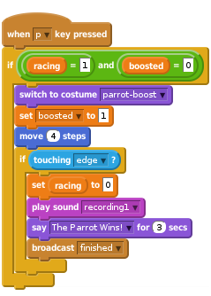
Dòng lệnh để kiểm tra nếu cuộc đua kết thúc giờ đây được sử dụng trong hai nơi cho mỗi hình họa: khi hình họa di chuyển bình thường, và khi chúng tăng tốc. Chúng ta có thể đơn giản hóa dòng lệnh của mình bằng cách dùng custom block, đó chính là một phần của dòng lệnh giúp ta có thể dùng chúng nhiều hơn một điểm, cũng giống như việc viết Scratch code block!
More Blocks và sau đó click vào Make a Block.define finished xuất hiện trong cửa sổ dòng lệnh. Kéo nó ra một vùng trống.iftouching edge?then và kéo nó tới khối define finished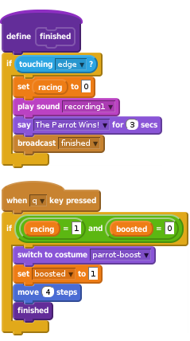
Bạn có thể kéo khối finished từ bảng màu và dùng nó như những mục mã hóa khác?
Xóa khối iftouching edge? khác từ dòng lệnh và thay thế nó bằng một khối finished tự tạo.
Liệu nó có thể làm cho chương trình của bạn dễ đọc hơn không? Bạn có thể tạo một khối tự tạo tương tự cho hình họa cô sư tử không?
Rất tốt, bạn đã hoàn thành, giờ hãy tận hưởng trò chơi của mình nào!